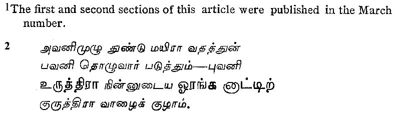
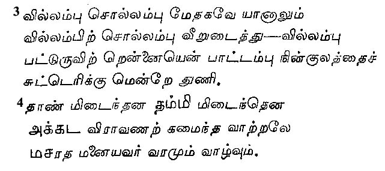
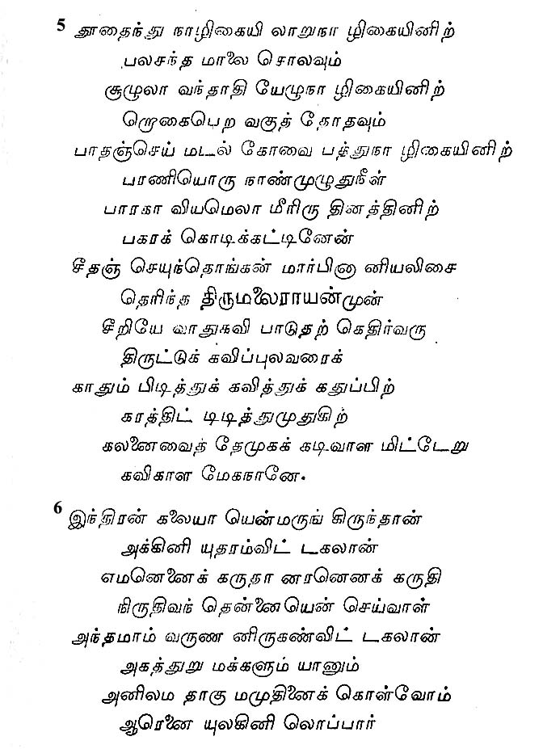
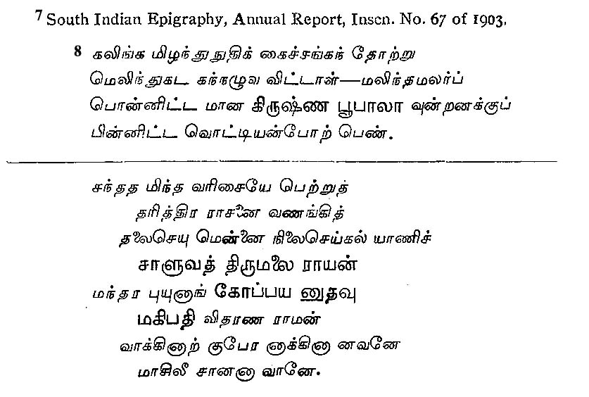
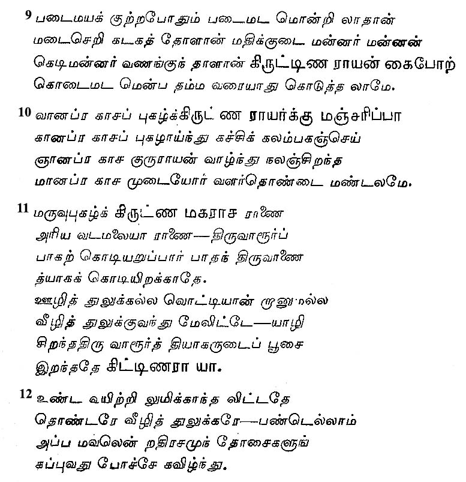
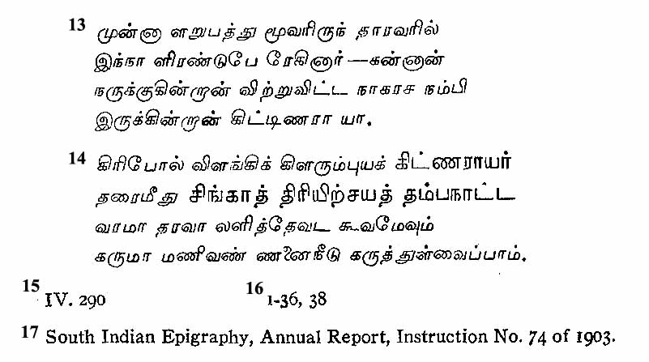
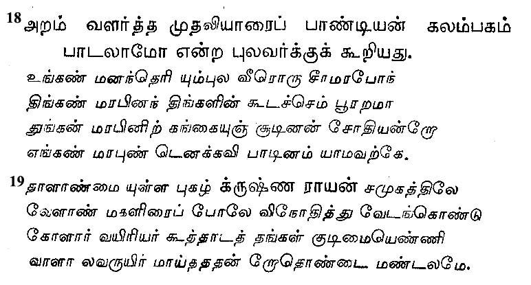
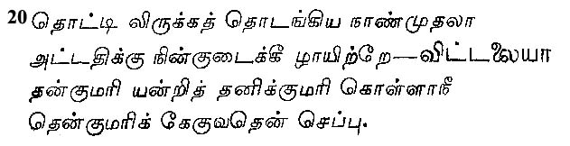
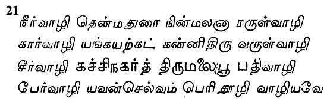

The Tamils and the Andhras
BY PANDIT M. RAGHAVA AIYANGAR
III1
It is indisputable that the Dravida and the Andhra countries were closely inter-related politically in the two centuries in which the Cholas were predominant. In the Tamil grammatical works, we frequently come across the statement that ‘Chola kings are greater than the Baduga kings’ and this statement must have come to be current in only those centuries when the Cholas had become more powerful than the Telugu kings. This state of things continued till the decline of the Cholas, and the Andhra country along with other countries slipped from their control, owing to the rise of the Kakatiyas of Warangal. Prataparudra I (1162-1197) wrested Vengi from Raja-Raja-Chola II, the great grandson of Kulottunga I. Kamban, the great epic poet of the days of Raja-Raja II, seems to have become estranged from him and gone over to Prataparudra. An old stanza is attributed to Kamban, evidently composed in honour of his new patron Prataparudra, wherein it is indicated that the famous Andhra king became so enamoured of the poet exiled from the Tamil country that he was found willing to perform menial services for him.2 Later on Kamban seems to have come back to the Chola country, but the Chola king could not have been really well-affected towards him, for he must, indeed, have entertained apprehensions of Kamban being able to secure the goodwill of the enemies of the Chola power. Tradition has it that the unsuspecting Kamban went up to the Chola palace as usual, and that the treacherous king let loose a tiger kept near the entrance of the palace and sped an arrow at him as though he were really aiming at the tiger. The poet seems to have thus realised how treacherous the king had been, and laid on him and his dynasty a curse, in a stanza which still sends a thrill through the Tamil country.3 The poet's words came true and the decline of the Chola power set in almost immediately, and in a few decades the power of the Cholas was completely broken. That the Poet had a fair acquaintance with Telugu is obvious from the use he has made of Telugu words in some of the stanzas of his epic, the Ramayana.4
Within two or three centuries of the decline of the Chola dynasty, the wheel turned and the Andhras came to rule over the Tamils. The chiefs who had been subject to the overlordship of the Cholas threw off the yoke of the suzerain power and raised the standard of independence. The Mahomedan invaders marched quickly into the Telugu and Tamil countries and plundered them. To restore order in the South and consolidate the Hindu powers against the impending Mohammedan domination was the task of the nascent dynasty of Vijayanagar. How effectively the Kings of Vijayanagar preserved the Tamil country for the Hindus, politically and culturally, is well known to students of history. Though they ruled: from Hampi, the western most out-post of the Telugu country, they and their Viceroys had great affection for Tamil literature and great regard for the poets of the Tamil country. Saluva Tirumala, the Viceroy of the Tamil country during the reigns of Vijayanagar kings, Mallikarjuna (1449-1465) and Virupaksha (1466-1485), seems not only to have acquired a competent knowledge of Tamil literature, but also to have been a munificent patron of Tamil poets. Kalamegha addressed a poem to the Viceroy, lauding his own powers of poetical improvisation, and Saluva Tirumala was at first doubtful if the poet's claims were not really overdrawn and tested him in various ways but finally succumbed to the charm, sparkle and strength of his poetry.5 The attainments of Tirumala in Tamil are spoken to by Kalamegha himself, and obviously the Viceroy's appreciation of the poet's abilities was based upon a competent acquaintance with the beauties of Tamil.6 This Tirumala seems to have been the son of Gopayya of the Saluva line, and a Saluva Tirumala, son of a Gopayya, is known to have flourished in 1453 A.D.7 This would make it clear that the poet and the patron belonged to the middle of the 15th century.
We know also of Andhra kings being patrons of Tamil poets in even later days. Under Krishna-deva-raya, (1509-1529), the empire of Vijayanagar extended over not only the Telugu country but also the Tamil and the Kanarese lands. Not only was this emperor distinguished for his beauty, intellect, and power, but also by his poetic talents. Suffice it to say, however, a few words about his patronage of the poets of the Tamil country.
When he marched, about 1515, against the Oriya country and defeated Prataparudra (1497-1540), of the Gajapati line, and took to wife that King's daughter, Dukka, he had a Tamil poet Kumara-Sarasvati in his train. The marriage of the emperor with the princess of the conquered line was celebrated in a short stanza which is replete with double entendre.8 Other Tamil poets too shared the bounty of this emperor. The Jaina scholar Mandala-Purusha, the author of the Tamil lexicon, Sudamani Nikhandu, has a stanza in which he bears personal testimony to the munificence of Krishna-deva-raya.9 It would seem also that Jnana-Prakasa, an ascetic of the Vellala community, had composed a poem, Manjarippa, in praise of this emperor, but the poem is not now traceable.10
Occasional verses are also to be found in which distinguished men of the Tamil country and eminent poets have complained in Tamil verses to Krishna-deva-raya about misconduct in temples and charitable institutions. Tatva-Prakasa, an eminent Saiva ascetic and poet, laid a poetical injunction on the priests of the temple of Tiruvalur, who had not properly conducted a festival in that temple, and informed the Emperor in a poetic episode of what had happened.11 Immediately, the emperor issued orders against the priests, and the poet closed the controversy in a forceful Tamil poem in which he poured the vials of his indignation on the heads of the priests.12 A story is also current that on a certain Naga-Rasa-Nambi, an official of the same temple, bringing to the melting pot the images of two of the 63 saints of Tamil Saivism belonging to that temple, the poet composed a poem and taught it to a parrot and sent it on to Krishnaraya, so that it might sing out the complaint into his own ears.13
Hari-dasa, a poet who wrote the Iru-Samaya-Vilakkam, a poetical treatise on the controversies between the Saivas and Vaishnavas, was also a protege of this emperor. One of the stanzas of the work makes mention of a pillar of victory erected by the emperor in the Vishnu temple at Simhachalam.14 Mention of this pillar is to be found in the Amukta-Malyada a poetical composition of the Emperor himself15 and in the Manu-Charitra of Allasani Peddana, his Court poet,16 and in inscriptions.17 Evidently the pillar was set up as a memorial of the emperor's victory over Prataparudra of the Gajapati line. Though Hari-dasa would say that the pillar was set up at Simhachalam, it seems to have been really set up at Potunur, a village some thirty miles off. This receives confirmation from an inscription which makes mention of Krishna-deva-raya having made gifts of jewels and villages to the God of the temple of Simhachalam.
These circumstances furnish proof not only of the emperor's insight into the Tamil language and his munificence to Tamil poets but also of his own attainments in Tamil. The Amukta-Malyada, a Telugu poem of rare merit, attributed to this emperor himself, has for its theme the life of Sri Andal, a Tamil poetess who has been raised to the ranks of the saints by the Vaishnavas of the Tamil country. This Emperor was a cosmopolitan in politics, but in religion he was a follower of the Tamilian school of Vaishnavism. Though we cannot be sure who his religious preceptor was, it is said that his descendants were disciples of Tata-desika of Conjeevaram. In the Amukta-Malyada he paid due honour to the great saints and teachers of Tamil Vaishnavism and paid homage to the great figures of Tamil religious literature.
For the proper administration of the Tamil country, he relied upon ministers of Tamil origin. On one of such ministers, Ambi-Aram- Valarta Mudaliar, a Pandyan chief, he composed a poem, and when asked to justify his having sung of a minister, the emperor lauded highly the qualities of the minister18 Another poem bears witness to the great indignation of this minister when some actors about 1511 A.D., dressed themselves up like women of Vellala caste and acted before Krishna-raya and how keenly the minister felt the ignominy and how he retrieved the reputation of his community by putting the actors to the sword.19
After the days of Krishna-raya, the Viceroy of Achyuta and Sadasiva was Vittala, who distinguished himself by bringing under the yoke of the Vijayanagar Emperors those portions of the Tamil country which even the might of Krishna-raya had not been able to subdue. In 1543, he took Anantasayanam (Trivandrum), the capital of the Keralas, who had till then defied the Vijayanagar rulers, and his victorious arms held sway over the country between Cape Comorin and Mudukal in the Nizam's Dominions. In 1546-47, the Kerala king Bhutala-Vira-Rama dedicated some property for the performance of certain services in the temple of the Kanya at Cape Comorin in honour of this Viceroy. The memory of this invasion of the Kerala country and the expedition against Cape Comorin is preserved in a stanza attributed to a Pandyan chief in which the chief pays high compliments to the Viceroy's attainments in Tamil and love of the Tamil people.20
The year 1565 saw the downfall of the Vijayanagar Empire which had stood up as a bulwark protecting South India from the onslaughts of Mohammedan invaders. The overthrow of the Vijayanagar Empire was in a great measure the overthrow of Southern culture as well. The chiefs who had been the feudatories of the empire set themselves up as independent rulers. One of such chieftaincies arose at Madura and reached the summit of its prosperity under Tirumala Nayaka (1623-1659). This king too was a great patron of Tamil literature. A well known story has it that Kumara-Guru-Paramuni composed a poem on Sri-Minakshi, Goddess of this temple, in which he conceived of her as an infant, that he published it in this temple and in the presence of this king Tirumala Nayaka, and so pleased was the Goddess at the poet's conceit in depicting her as an infant that, out of the abundance of Her grace, she appeared before the audience in the guise of an Infant, captivated the audience with her magnetic grace and disappeared in a trice. In another poem too, Minatchi Ammai Kuram, this poet pays obeisance to Tirumala Nayaka.21
The minor charities which were under the control of the Nayaka Kings were seventy-four in number and more than half of this belonged to chieftains of Telugu origin. Many of them were well-versed in Tamil literature. It was in these days and under their patronage that poems like Kulappa Nayakan Kadal, and Virali Vidu Tudu were composed. Many are the occasional poems which celebrated the attainments of the chiefs of Ettayapuram in Tamil literature.
When these chieftains declined, the Mohammedan power took root in the country. These days were so troubled indeed that we cannot much regret that Tamil did not flourish. The British rule started from Madras and spread over the whole of India and has brought back peace. Will it bring back a period of greatness for Tamil?
It goes without saying that in the days when the Tamils ruled over the Andhra country and the Andhras in turn held sway over the Tamil lands, there must have been very much of inter-penetration of customs and cultures. It is well-known that hundreds of Telugu poets were really colonists in the Telugu country who had migrated from the Tamil land. So too, the Telugus who made the Tamil land their home contributed greatly to the uplift of Tamil culture. What greater proof of this statement can be had than that furnished by the life and activities of Tyagaraya to whom South Indian music owes its Renaissance!








